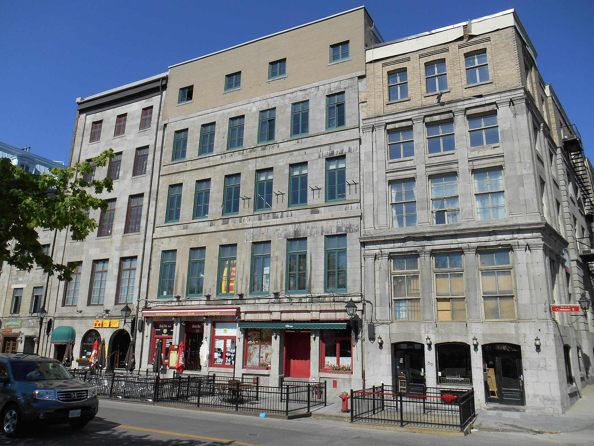

Maison-magasin and warehouse with dwellings above Magasin-entrepôt

Magasin-entrepôt Jean-Leclaire, 28-30 rue Saint-Paul Est with its secondary façade at 29 rue de la Commune Est, and its neighbours — grey stone, wide bays in regular tiers, flat roofs and heavy cornices, with commercial ground floors. Photograph by Jeangagnon, 19 May 2014, Wikimedia Commons, CC BY-SA 3.0. https://commons.wikimedia.org/wiki/File:Magasin-entrepot_Jean-Leclaire.JPG — licence, author and file URL read through the Commons API before download; the photograph was opened and checked against its description.
The building that made the port quarter and then, a century later, repopulated it. A mixed structure of timber, cast iron and stone; wide bays; a flat roof; a thick, projecting, often very ornamented cornice; red brick. In the runs between rue de la Commune and rue Saint-Paul it is frankly two-faced — sober where the goods came in, elaborate where they were sold. From the 1970s these are the buildings that were recycled into dwellings, which is how a quarter with a few hundred residents in the 1950s came to hold several thousand.
Montréal became the undisputed metropolis of Canada in the second half of the 19th century, at the centre of a road, maritime and transcontinental rail network, and the old town turned into a financial and administrative city — the shop window of Canadian capitalism, in the RPCQ's phrase. Offices, banks, insurance head offices, warehouses and courthouses went up with great stylistic eclecticism. Then the fall: after 1945 Montréal lost the metropolitan role to Toronto, the economic centre moved north-west, and by the 1950s, the cahier records, retail had practically vanished from the old town and its residents numbered only a few hundred. Serious proposals for an expressway through Vieux-Montréal followed, and the protests against them led to the Québec government decreeing the quarter an arrondissement historique in 1964. Survival then meant new uses for empty floors, and the cahier states the mechanism plainly: « On y a recyclé plusieurs de ces bâtiments en condos, dont le premier exemple est celui des Cours Le Royer, posant ainsi le premier jalon d'un repeuplement du Vieux-Montréal. » The loft conversions of rue Saint-Paul and the faubourg des Récollets follow the same line.
| Tenure / plan | mixed |
|---|---|
| Storeys | – |
| Roof form | flat |
| Roof pitch | – |
| Window proportion | – |
| Principal cladding | cut-stone, montreal-greystone, clay-brick-red |
| Roofing | – |
| Garage | – |
| Lot width | – |
| Front setback | – |
| Side setback | – |
| Front yard green | – |
What RPCQ id 93528 (MCC); Ville de Montréal says about this type
- Built to the street line in a continuous run, party-walled, on the blocks between rue de la Commune and rue Saint-Paul and along rues des Récollets, Sainte-Hélène, Saint-Pierre and Le Moyne.
- Two-faced by design where the block runs through: the cahier records a relatively plain elevation on the goods-handling side and a far more elaborate one on the commercial side, on rue Saint-Paul.
- Flat roof.
- Thick, projecting and often very ornamented cornice.
- Heavy projecting cornice as the crowning element.
- Ornament concentrated on the commercial elevation; showrooms for retail selling behind the ground-floor bays in the sector of the Bourses.
- « Plusieurs de ces bâtiments ont une façade relativement sobre du côté où se fait la manutention des marchandises, tandis que la facture architecturale est plus élaborée du côté commercial, sur la rue Saint-Paul. »
- Wide bays (« larges baies »).
- Mixed structure of timber, cast iron and stone.
- Red brick.
- Grey limestone on the older runs, in a site where grey limestone predominates until 1850 and a wide variety of stone types after it.
- « L’empreinte de l’architecture éclectique du XIXe siècle, visible notamment dans les bâtiments commerciaux, industriels, institutionnels et les édifices à bureaux, reconnaissables à leur structure mixte de bois, de fonte et de pierres, leurs larges baies, leur toit plat, leur corniche épaisse, débordante et souvent très ornementée et l’emploi de la brique rouge. »
Storeys, roof pitch, roofing, window proportion, lot width, setbacks and green front yard are null because neither source states them. Note also what the two sources are doing: the RPCQ describes this as a commercial, industrial and institutional family — « les bâtiments commerciaux, industriels, institutionnels et les édifices à bureaux » — and the residential content of the type is a fact of its second life, not of its first. It is carried on a residential site because the conversion of these buildings to dwellings is what repopulated Vieux-Montréal, and because the cahier says so. Tenure plan is recorded as mixed for the same reason.
Same word elsewhere
- –
Same form elsewhere
- –
Same period elsewhere
- Québec house of neoclassical inspiration (Charlesbourg (Trait-Carré))
- Mansard house (Charlesbourg (Trait-Carré))
- English summer villa on the lake shore (Dorval)
- Central-gable house (maison à pignon central) (Gatineau)
- Mansard-roofed house with gable wall on the façade (maison à toit mansardé avec mur pignon en façade) (Gatineau)
- One-and-a-half-storey wooden matchstick house (maison allumette en bois d'un étage et demi) (Gatineau)
- Wood matchstick house of two to two and a half storeys (maison allumette en bois de deux à deux étages et demi) (Gatineau)
- L-plan house with a two-slope (gable) roof (maison avec plan en L à toit à deux versants) (Gatineau)
- Traditional Québec house of neoclassical influence (Île d'Orléans)
- Regency cottage (Île d'Orléans)
- Second Empire style and the mansard house (Île d'Orléans)
- Victorian eclecticism (Île d'Orléans)
- Bourgeois brick house in the Victorian taste (Lachine (borough of Montréal))
- Brick duplex and triplex, detached or in continuous alignment (Lachine (borough of Montréal))
- Small one-storey brick house, wider than deep, with a crown (Lachine (borough of Montréal))
- Franco-Québécois transitional house (Lévis)
- Québécois traditional house (Lévis)
- Regency cottage (Lévis)
- Neo-Gothic (Lévis)
- Neoclassical house (Lévis)
- Agricultural vernacular building (Lévis)
- Second Empire house (Lévis)
- Victorian house (Lévis)
- American vernacular house (Lévis)
- Mixed-use or commercial building (Lévis)
- Village house of Longue-Pointe (Mercier–Hochelaga-Maisonneuve (borough of Montréal))
- Company workers' house of the Hudon mill, rue Saint-Germain (Mercier–Hochelaga-Maisonneuve (borough of Montréal))
- Bourgeois residence of the cité, Beaux-Arts (Mercier–Hochelaga-Maisonneuve (borough of Montréal))
- Shop-and-dwellings block on the commercial artery (Mercier–Hochelaga-Maisonneuve (borough of Montréal))
- Three-storey workers' plex (Mercier–Hochelaga-Maisonneuve (borough of Montréal))
- Faubourg house (Le Plateau-Mont-Royal (borough of Montréal))
- Detached urban house (Le Plateau-Mont-Royal (borough of Montréal))
- Duplex without front setback (Le Plateau-Mont-Royal (borough of Montréal))
- Duplex with front setback (Le Plateau-Mont-Royal (borough of Montréal))
- Duplex with exterior stair (Le Plateau-Mont-Royal (borough of Montréal))
- Triplex with interior stair (Le Plateau-Mont-Royal (borough of Montréal))
- Triplex with exterior stair (Le Plateau-Mont-Royal (borough of Montréal))
- Multiplex (Le Plateau-Mont-Royal (borough of Montréal))
- Row urban house (Le Plateau-Mont-Royal (borough of Montréal))
- Traditional Québec house of the village core (Pointe-Claire)
- Cubique — massive symmetrical block, imposing gallery, low hipped roof (Pointe-Claire)
- Village Boomtown house, two storeys, flat or low-pitch roof behind a crown (Pointe-Claire)
- Franco-Québécois transition house (Québec City)
- London-type terrace house (Québec City)
- Palladian house (residential Palladian) (Québec City)
- Neo-Gothic house, villa or cottage (Québec City)
- Québécois neoclassical house (Québec City)
- Regency cottage (Québec City)
- Regency villa (Québec City)
- Mansard-roofed house (Québec City)
- Rudimentary faubourg house (Québec City)
- Boomtown house and shop-house (Québec City)
- Cubic house (Four Square) (Québec City)
- Flat-roofed faubourg house (Québec City)
- Industrial-vernacular cottage (Québec City)
- Neo-Queen Anne house (Québec City)
- Neo-Renaissance house and mixed-use block (Québec City)
- Neo-Tudor house (Québec City)
- Plex — superposed dwellings (Québec City)
- Triplex with exterior stair (Rosemont–La Petite-Patrie (borough of Montréal))
- Duplex with exterior stair (Rosemont–La Petite-Patrie (borough of Montréal))
- Conciergerie (Rosemont–La Petite-Patrie (borough of Montréal))
- Traditional French and Québécois house (Saint-Lambert)
- Mansard-roofed house of Second Empire influence (Saint-Lambert)
- Queen Anne style house (Saint-Lambert)
- Boomtown house with false mansard (Saint-Lambert)
- Boomtown house with crown (parapet or cornice) (Saint-Lambert)
- Cubic (Four Square) house (Saint-Lambert)
- House of Arts and Crafts influence (Saint-Lambert)
- Multi-dwelling building of plex type (Saint-Lambert)
- Two-storey clapboard village house of the îlot villageois (Sainte-Anne-de-Bellevue)
- Traditional Québec house of the village core (Sainte-Anne-de-Bellevue)
- Garden City Press workers' house (Sainte-Anne-de-Bellevue)
- English summer villa on the lake shore (Senneville)
- Arts and Crafts country estate (Senneville)
- Boomtown house (Le Sud-Ouest (Montréal))
- Duplex with interior stair (Le Sud-Ouest (Montréal))
- Three-storey duplex (Le Sud-Ouest (Montréal))
- Triplex with interior stair (Le Sud-Ouest (Montréal))
- Urban house (Le Sud-Ouest (Montréal))
- Maison cossue of rue Saint-Louis (Vieux-Terrebonne)
- Neoclassical Québécois stone house (Vieux-Terrebonne)
- Small-gabarit vernacular village house of the Bas-de-la-Côte (Vieux-Terrebonne)
- Well-to-do bourgeois house in stone and brick (maison cossue) (Trois-Rivières)
- Rural or village house (Villeray–Saint-Michel–Parc-Extension)
- Picturesque villa and country house (Westmount)
- Greystone row house (Westmount)
- Greystone triplex with exterior stair (Westmount)
- Mansard-roofed house of Second Empire influence (Westmount)
- Queen Anne house (Westmount)
- Richardsonian Romanesque house (Westmount)
Same style elsewhere
- Victorian eclecticism (Île d'Orléans)
- Bourgeois brick house in the Victorian taste (Lachine (borough of Montréal))
- Victorian house (Lévis)
- Detached urban house (Le Plateau-Mont-Royal (borough of Montréal))
- Duplex without front setback (Le Plateau-Mont-Royal (borough of Montréal))
- Duplex with front setback (Le Plateau-Mont-Royal (borough of Montréal))
- Row urban house (Le Plateau-Mont-Royal (borough of Montréal))
- Neo-Queen Anne house (Québec City)
- Triplex with exterior stair (Rosemont–La Petite-Patrie (borough of Montréal))
- Duplex with interior stair (Le Sud-Ouest (Montréal))
- Three-storey duplex (Le Sud-Ouest (Montréal))
- Triplex with interior stair (Le Sud-Ouest (Montréal))
- Urban house (Le Sud-Ouest (Montréal))
- Maison cossue of rue Saint-Louis (Vieux-Terrebonne)
- Well-to-do bourgeois house in stone and brick (maison cossue) (Trois-Rivières)
- The 1908 reconstruction block — brick, flat-roofed, built all at once (Trois-Rivières)
- Greystone terrace (Ville-Marie (Montréal))
- Workers' house with carriage gate (Ville-Marie (Montréal))
- Plex of the early 20th century (Villeray–Saint-Michel–Parc-Extension)